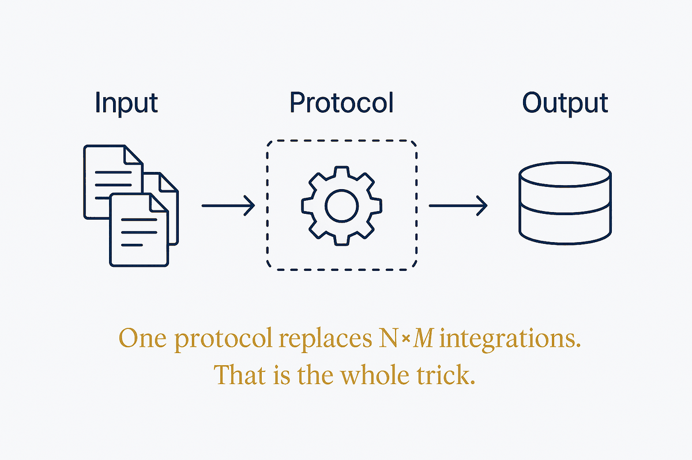

One protocol replaces N×M integrations. That's the whole trick — and the token tax nobody mentions means you still can't expose everything.

Before a standard, every model needed a bespoke connector to every tool: N models times M tools, each pair hand-built and separately maintained. A protocol collapses that to N plus M. That is genuinely valuable and it is genuinely unglamorous — the contribution is a common transport and three primitives, not intelligence.
The three primitives are worth keeping straight because they answer different questions about control. Tools are model-controlled: the model decides when to call them. Resources are application-controlled: the app injects them as context. Prompts are user-controlled: a person invokes them deliberately. Most confusion about what a server "should" expose dissolves once you ask who is meant to be pulling the trigger.
Then there is the cost nobody puts on the slide. Every tool schema you expose consumes context on every single turn — fifty tools at fifty tokens is twenty-five hundred tokens spent before the work starts. Worse, tool-selection accuracy degrades as the menu grows; past roughly fifteen to thirty tools, the model starts picking wrong. So exposing everything is not generous, it is actively harmful, and the fix is scoping: show this agent only the tools this task needs.
The other quiet failure is schema drift. A server changes its shape, the agent keeps calling it, and nothing errors loudly — the behaviour just degrades in a way that looks like the model got worse. That is the same lesson as everywhere else in this library: the failure that doesn't announce itself is the one worth instrumenting for. A protocol standardises connection; it does not standardise trust, and the gap between those is where the engineering lives.